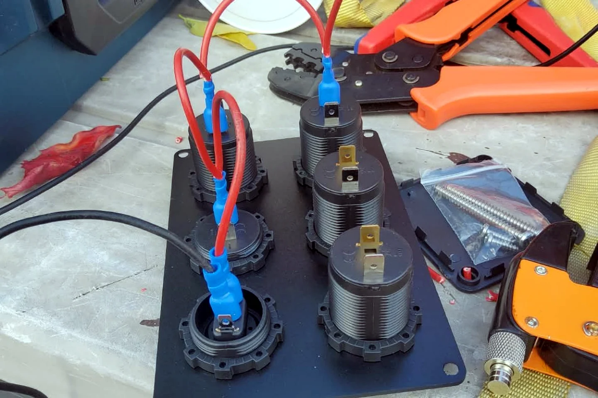

Batterie supplémentaire sous le siège — enfin la puissance pour la charge

Recharger des téléphones, utiliser des lumières, alimenter les batteries de l’appareil photo — en déplacement, on réalise rapidement à quel point la vie quotidienne dépend de l’électricité. Au début, je devais constamment réfléchir à ce qui pouvait encore être chargé sans que la batterie du démarreur ne soit épuisée le lendemain matin. La solution a été une batterie supplémentaire sous le siège.
Séparer le départ et le vivre
L’idée d’une batterie de démarrage est simple : la batterie de démarrage reste principalement responsable du véhicule. La batterie supplémentaire fournit aux consommateurs dans le salon. Avec ça, je pouvais charger et utiliser les lumières sans me soucier du prochain démarrage du moteur à chaque pourcentage de batterie.
L’espace sous le siège était pratique car la batterie pouvait être protégée et stockée de manière relativement discrète. La convivence de ce lieu d’installation pour un modèle de batterie particulier dépend de la conception, du montage, de la ventilation et des spécifications du fabricant. « S’intègre » ne suffit pas comme test pour une batterie.
Enfin, des contacts là où j’en ai besoin
Sur la photo, on peut voir les nouveaux ports 12 volts ou de charge pendant le câblage. Ce n’est pas une image spectaculaire et brillante, mais c’est exactement à ça que ressemble la partie qui change plus tard la vie quotidienne. Préparer les câbles, crimer les contacts proprement, attribuer clairement chaque connexion — de nombreuses petites étapes pour quelque chose qui semble alors naturel.
Ce qui comptait le plus pour moi, c’était autant de performances que possible
- La batterie de démarrage ne doit pas être déchargée sans que mes clients domestiques ne le remarquent.
- Chaque circuit électrique a besoin d’une protection appropriée près de la source d’énergie.
- La section transversale, le fusible et le consommateur du câble doivent correspondre.
- Les câbles doivent être protégés contre les frottements, la chaleur et les mouvements lâches.
- La batterie doit être solidement montée et adaptée à l’emplacement d’installation choisi.
Le petit luxe de pouvoir recharger à tout moment
Après l’installation, l’électricité n’est soudainement plus devenue un sujet de calcul quotidien. Je pouvais connecter mes appareils, utiliser les lumières, et je n’avais pas à faire tourner le moteur ni chercher une prise pour chaque charge. Pour certains, cela semble trivial. Après des semaines dans le camping-car, c’est un vrai luxe.
La batterie sous le siège est à peine visible dans la vie quotidienne. Mais ce sont souvent les meilleures conversions : elles ne gênent pas, ne font pas de spectacle, et résolvent un vrai problème chaque jour.
À bientôt et bon voyage toujours,
votre Tussy 💛